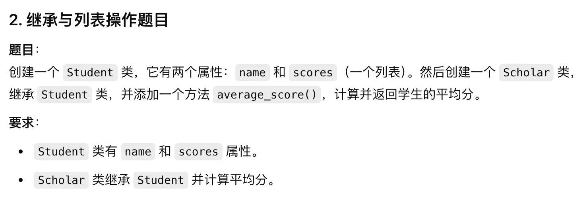
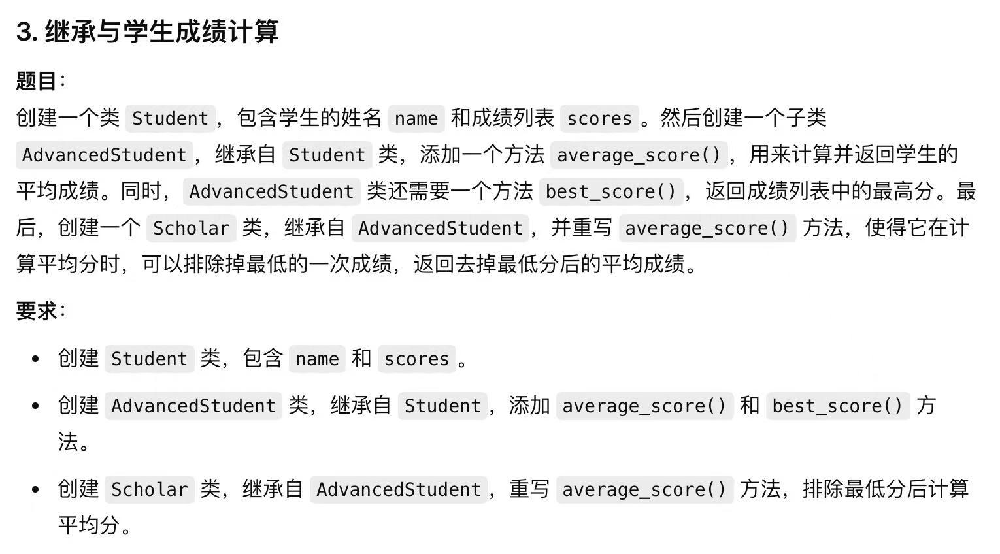

继承inherit是对现有的类的扩展(extension)，实现对代码的重用和重写。
被继承的类叫作父类（Super Class 或 Parent Class）, 继承的类叫子类(Subclass 或 Child).
- 父类就像是一个
基础模板 base model或者蓝图 blue print，比如动物类 - 子类继承父类后，它自动拥有了父类的特性，但是可以添加更多的特性，或者修改父类的特性。例如
动物类的子类可以猫类或狗类，它们都继承了动物类的行为，但是也有自己独特的行为。
对于已经创建好的并开始被使用的类 ClassA 来说，有了新的要求需要做更改，但是对于ClassA来说，已经有对象创建了，并且这些对象并不需要新加的功能，所以需要用到继承来解决问题。
继承动物类
在继承动物类之前，首先要有一个动物类才可以继承：
class Animal:
def __init__(self, name, sound):
self.name = name
self.sound = sound
def speak(self):
print(f"{self.name} makes a {self.sound} sound.")
animal = Animal('Tony', 'roar')
animal.speak()
有了动物类之后，就可以实现继承了，下面用小狗类举例
class Dog(Animal):
pass
dog = Dog('Odie', 'bark')
dog.speak()
子类对父类的扩展
在上面的例子中，Dog类完全继承了父类的属性和方法，在这个基础上， Dog也可以对父类进行扩展，比如新一个功能catch。
class Dog(Animal):
def catch(self, obj):
print(f"I caught a {obj} that thrown by my master.")
dog = Dog('Odie', 'bark')
dog.speak()
``
方法的重写
有时候，子类需要对父类的行为（方法）进行修改，这叫做重写(Override)。
class Cat(Animal):
def speak(self):
print(f"{self.sound}, {self.sound}")
重写之后，Cat的speak方法与父类已经完全不一样了
cat = Cat("Garfield", 'Meow~')
cat.speak()
# 打印结果为：Meow~, Meow~
重写可以针对父类的所有资源：
class Cat(Animal):
def __init__(self, color):
self.color = color
def speak(self):
print(f"{self.sound}, {self.sound}")
对于上面的继承方式，Cat类放弃了父类的两个属性name和sound, 这样一来，Cat类里的speak方法就不能被成功调用。
如果在重写时想要保留父类原有的功能或属性，需要用到super关键字。
class Cat(Animal):
def __init__(self, name, sound, color):
super().__init__(name, sound)
self.color = color
def speak(self):
super().speak()
print(f"{self.sound}, {self.sound}")
方法的重写需要特别注意两个点：
- 重写时，需要完全继承父类方法，super()的
.之后的名字要写正确。 - 不要忘记需要带入的参数，以及传值顺序。
完整的例子如下：
class Animal:
def __init__(self, name, sound):
self.name = name
self.sound = sound
def speak(self):
print(f"{self.name} makes a {self.sound} sound.")
def run(self):
print("I am running.")
def eat(self, food):
print(f"I am eating {food}.")
class Cat(Animal):
def __init__(self, name, sound, color):
super().__init__(name, sound)
self.color = color
def speak(self):
super().speak()
print(f"{self.sound}, {self.sound}")
def eat(self, food):
super().run()
print("Clean my face and hand")
super().eat(food)
print("Drink water.")
多继承
多继承指的是一个类可以从多个父类继承属性和方法。
多继承的语法为：
class ChildClass(ParentClass1, ParentClass2, ...):
pass
下面是一个全新的动物类
class Animal:
def alive(self):
print("I am alive")
def eat(self, food):
print("I must eat to be alive.")
然后创建一个鸟类:
class Bird:
def __init__(self):
self.wings = 2
self.legs = 2
def fly(self):
print("I can fly.")
对于小鸡，它既是动物又是鸟类，所以它可以多继承上面两个父类
class Chicken(Animal, Bird):
pass
在多继承的过程中，如果需要在重写或者扩展函数时，需要用super关键字来调用父类的方法，与单继承类似，但是需要特别注意，如果两个父类有同名方法，要掌握 MRO 的查找逻辑。
MRO(Method Resolution Order)
当子类调用方法时，Python 会按照MRO中的顺序去查找方法，这样可以保证类的层次结构的正确性。
MRO的规则:
- 深度优先： Python 首先会从左到右查找父类
- 从子类开始：搜索是从当前类开始的，如果当前类没有该方法或属性，就查找父类
在实例应用中，如果对这个顺序不清楚，可以调用mro()或 __mro__查看 MRO顺序
print(Chicken.__mro__)
# 打印结果为： (<class '__main__.Chicken'>, <class '__main__.Animal'>, <class '__main__.Bird'>, <class 'object'>)
如果多继承中的多个父类有同名方法的情况，就需要MRO机制来确定最终执行的是哪个类里的方法：
class A:
def speak(self):
print('A is speaking.')
class B:
def speak(self):
print('B is speaking.')
class C(A, B):
pass
c = C()
c.speak()
#打印结果： A is speaking.
如果需要手动改变顺序，也就是说需要强制让子类重写父类里的重名方法，并且不按照MRO规则调用，需要特别写明父类的名字的调用，并且要传递参数self， 这种调用叫做显式Explicit调用：
class C(A, B):
def speak(self):
B.speak(self)
A.speak(self)
钻石继承问题（Diamond Problem）
在多继承中，如果一个类继承了两个父类，而这个父类又继承自同一个祖先类，可能会遇到所谓的钻石继承问题:
# 祖先类 A
class A:
def speak(self):
print('A is speaking.')
# 父类 B
class B(A):
def speak(self):
super().speak()
print('B is speaking.')
# 父类 C
class C(A):
def speak(self):
super().speak()
print('C is speaking.')
# 子类 D
class D(B, C):
def speak(self):
super().speak()
print('D is speaking.')
print(D.__mro__)
d = D()
d.speak()
"""
执行结果为：
A is speaking.
C is speaking.
B is speaking.
D is speaking.
"""
练习

class Student:
def __init__(self, name, scores):
self.name = name
self.scores = scores
class Scholar(Student):
def average_score(self):
return sum(self.scores)/len(self.scores)
scholar = Scholar('Jack', [100, 98, 92, 97, 99])
print(scholar.average_score())

class Student:
def __init__(self, name, scores):
self.name = name
self.scores = scores
class AdvancedStudent(Student):
def average_score(self):
return sum(self.scores)/len(self.scores)
class Scholar(AdvancedStudent):
def average_score(self):
return (sum(self.scores)-min(self.scores))/(len(self.scores)-1)
scholar = Scholar('Jack', [100, 98, 92, 97, 99])
print(scholar.average_score())